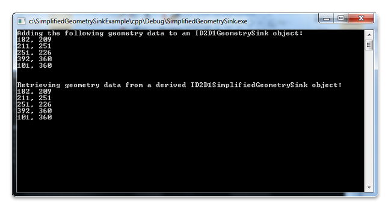

While an ID2D1Geometry object is immutable, there are cases where you need to manipulate the geometry data in a path geometry object. Direct2D enables you to do so by providing an extendable interface named ID2D1SimplifiedGeometrySink. For concept illustration, this topic describes how to extend this interface to retrieve the geometry data from a path geometry object.
To Extend the ID2D1SimplifiedGeometrySink interface
The following code example shows how to implement a class named SpecializedSink that inherits from the ID2D1SimplifiedGeometrySink interface. For the simplicity of concept illustration, the extended AddLines method retrieves the geometry data and then displays it on the console window; you can customize this method to meet your specific data needs.
class SpecializedSink : public ID2D1SimplifiedGeometrySink
{
public:
SpecializedSink()
: m_cRef(1)
{
}
STDMETHOD_(ULONG, AddRef)(THIS)
{
return InterlockedIncrement(reinterpret_cast<LONG volatile *>(&m_cRef));
}
STDMETHOD_(ULONG, Release)(THIS)
{
ULONG cRef = static_cast<ULONG>(
InterlockedDecrement(reinterpret_cast<LONG volatile *>(&m_cRef)));
if(0 == cRef)
{
delete this;
}
return cRef;
}
STDMETHOD(QueryInterface)(THIS_ REFIID iid, void** ppvObject)
{
HRESULT hr = S_OK;
if (__uuidof(IUnknown) == iid)
{
*ppvObject = static_cast<IUnknown*>(this);
AddRef();
}
else if (__uuidof(ID2D1SimplifiedGeometrySink) == iid)
{
*ppvObject = static_cast<ID2D1SimplifiedGeometrySink*>(this);
AddRef();
}
else
{
*ppvObject = NULL;
hr = E_NOINTERFACE;
}
return hr;
}
STDMETHOD_(void, AddBeziers)(const D2D1_BEZIER_SEGMENT * /*beziers*/,
UINT /*beziersCount*/)
{
// Customize this method to meet your specific data needs.
}
STDMETHOD_(void, AddLines)(const D2D1_POINT_2F *points, UINT pointsCount)
{
// Customize this method to meet your specific data needs.
printf("\n\nRetrieving geometry data from a derived ID2D1SimplifiedGeometrySink object:\n");
for (UINT i = 0; i < pointsCount; ++i)
{
printf("%.0f, %.0f\n", points[i].x, points[i].y);
}
}
STDMETHOD_(void, BeginFigure)(D2D1_POINT_2F startPoint,
D2D1_FIGURE_BEGIN figureBegin)
{
}
STDMETHOD_(void, EndFigure)(D2D1_FIGURE_END figureEnd)
{
}
STDMETHOD_(void, SetFillMode)(D2D1_FILL_MODE fillMode)
{
}
STDMETHOD_(void, SetSegmentFlags)(D2D1_PATH_SEGMENT vertexFlags)
{
}
STDMETHOD(Close)()
{
return S_OK;
}
private:
UINT m_cRef;
};
The example then uses a set of data (182, 209), (211, 251), (251, 226), (392, 360), and (101, 360) to create a populated path geometry (m_pGeometry) where data can be retrieved.
hr = m_pD2DFactory->CreatePathGeometry(&m_pGeometry);
if(SUCCEEDED(hr))
{
ID2D1GeometrySink *pSink = NULL;
hr = m_pGeometry->Open(&pSink);
if (SUCCEEDED(hr))
{
pSink->SetFillMode(D2D1_FILL_MODE_WINDING);
pSink->BeginFigure(
D2D1::Point2F(101,360),
D2D1_FIGURE_BEGIN_FILLED
);
D2D1_POINT_2F points[5] = {
D2D1::Point2F(182,209),
D2D1::Point2F(211,251),
D2D1::Point2F(251,226),
D2D1::Point2F(392,360),
D2D1::Point2F(101,360),
};
printf("Adding the following geometry data to an ID2D1GeometrySink object:\n");
printf("182, 209\n");
printf("211, 251\n");
printf("251, 226\n");
printf("392, 360\n");
printf("101, 360\n");
pSink->AddLines(points, ARRAYSIZE(points));
pSink->EndFigure(D2D1_FIGURE_END_CLOSED);
hr = pSink->Close();
pSink->Release();
Finally, the example creates a SpecializedSink object, and then calls the ID2D1Geometry::Simplify method, passing in the SpecializedSink object and the D2D1_GEOMETRY_SIMPLIFICATION_OPTION_LINES parameter, which causes any curves to be flattened into line segments.
SpecializedSink *pSpecializedSink = NULL;
if (SUCCEEDED(hr))
{
pSpecializedSink = new SpecializedSink();
if (!pSpecializedSink)
{
hr = E_OUTOFMEMORY;
}
}
if (SUCCEEDED(hr))
{
hr = m_pGeometry->Simplify(
D2D1_GEOMETRY_SIMPLIFICATION_OPTION_LINES, // This causes any curves to be flattened into line segments.
NULL, // world transform
pSpecializedSink
);
if (SUCCEEDED(hr))
{
hr = pSpecializedSink->Close();
}
pSpecializedSink->Release();
}
The program creates outputs as shown in the following screen shot.

Â
Â